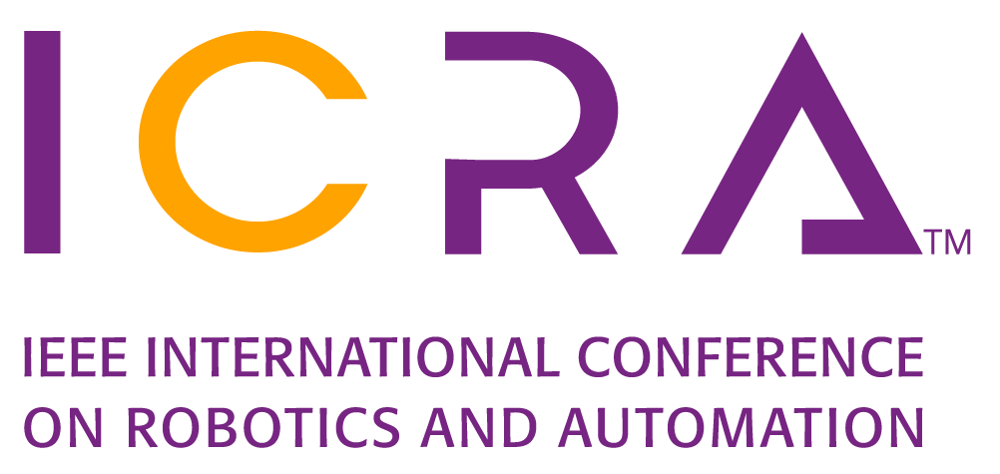
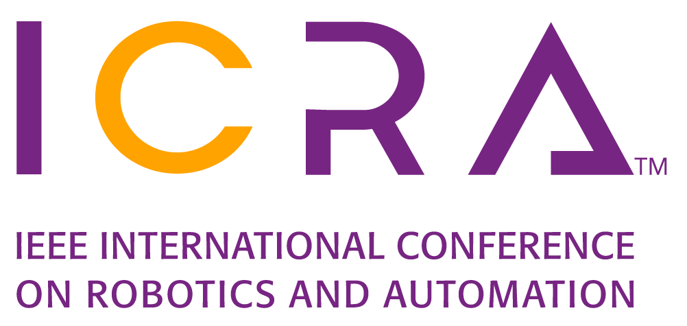
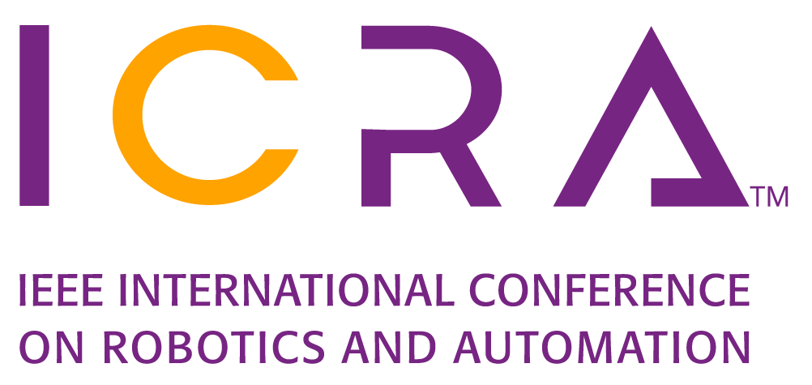
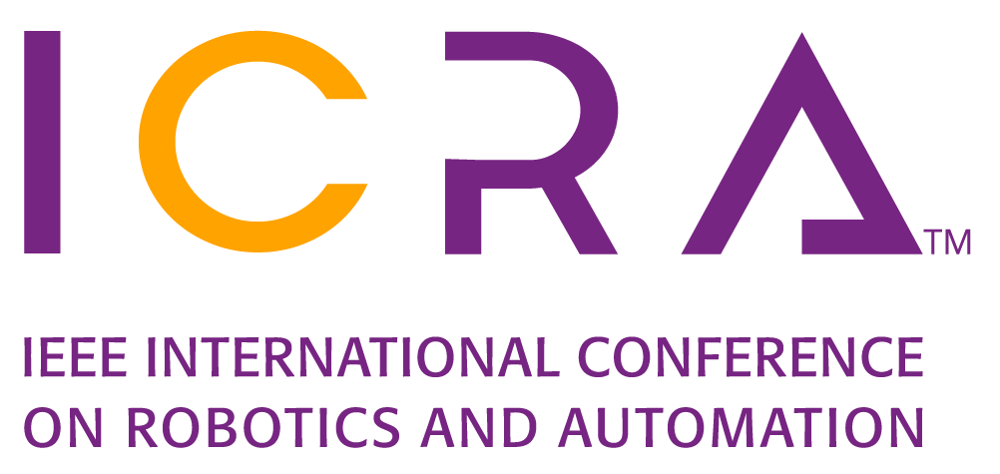

This project explores neural encodings to enable low-power, high-accuracy motion planning in robotics.
📄 View Paper (PDF) 🔗 GitHub Repo Download slidesIf you find this project useful in your research, please cite:
@inproceedings{BEL-ICRA2025,
author = {Shah, Deval and Zhao, Jocelyn and Aamodt, Tor M. },
booktitle = {International Conference on Robotics and Automation},
title = {Neural Encodings for Energy-Efficient Motion Planning},
url = {https://ubc-aamodt-group.github.io/bel_motion_planners/paper.pdf},
month = {May},
year = {2025},
}